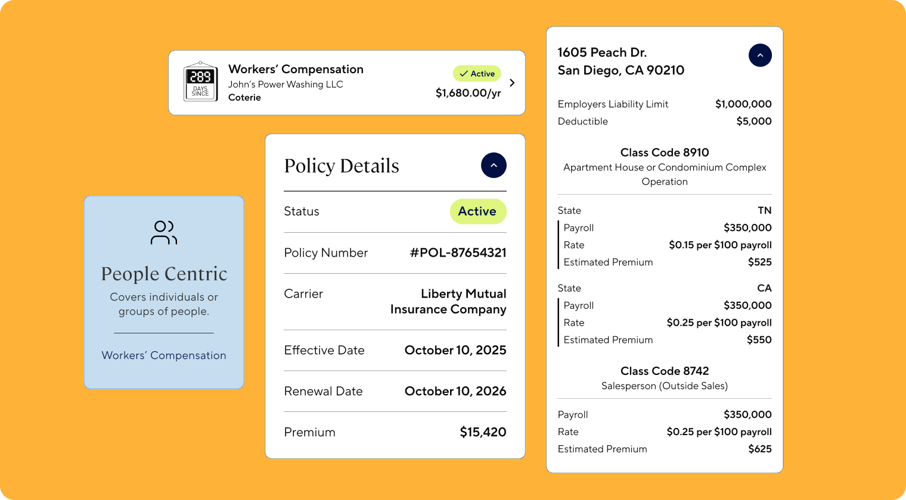
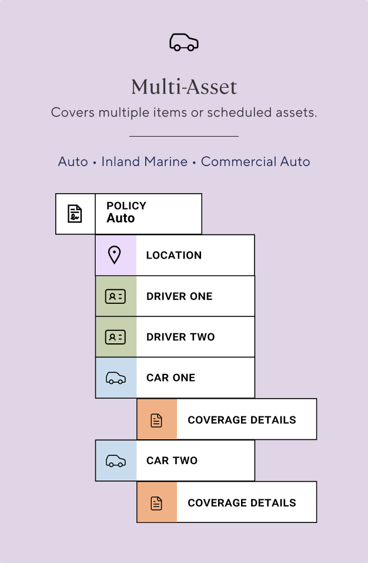
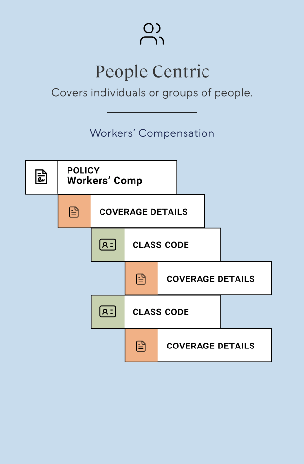
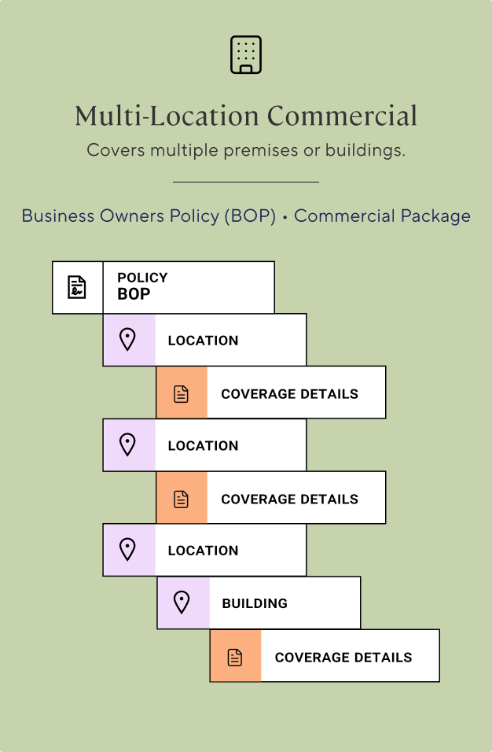
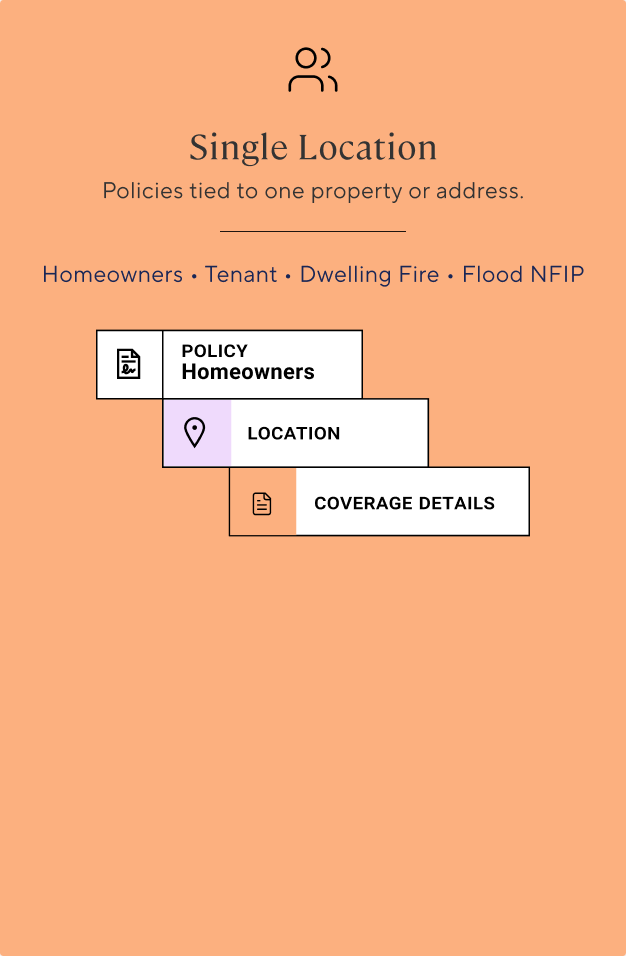
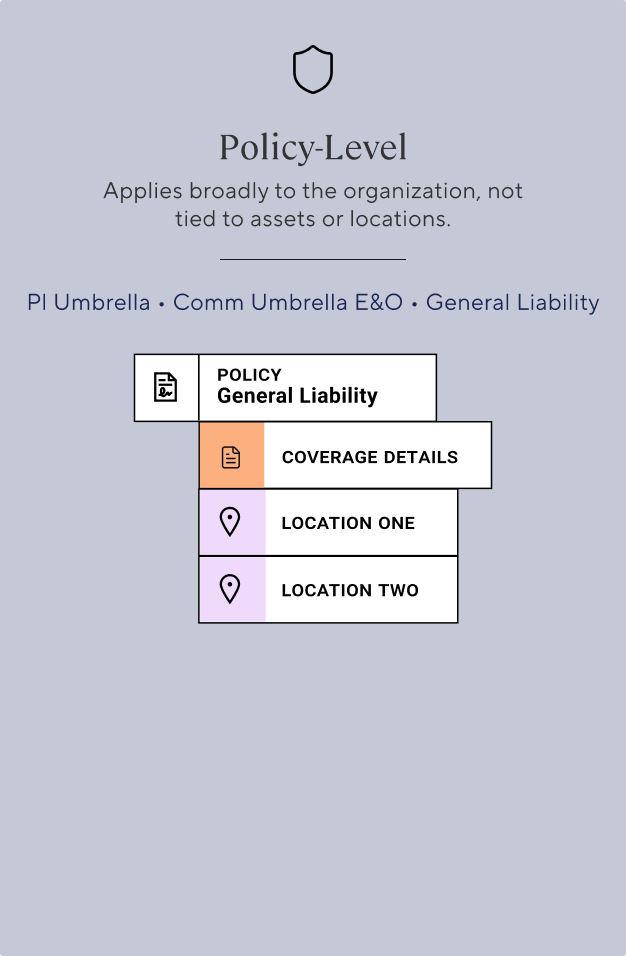
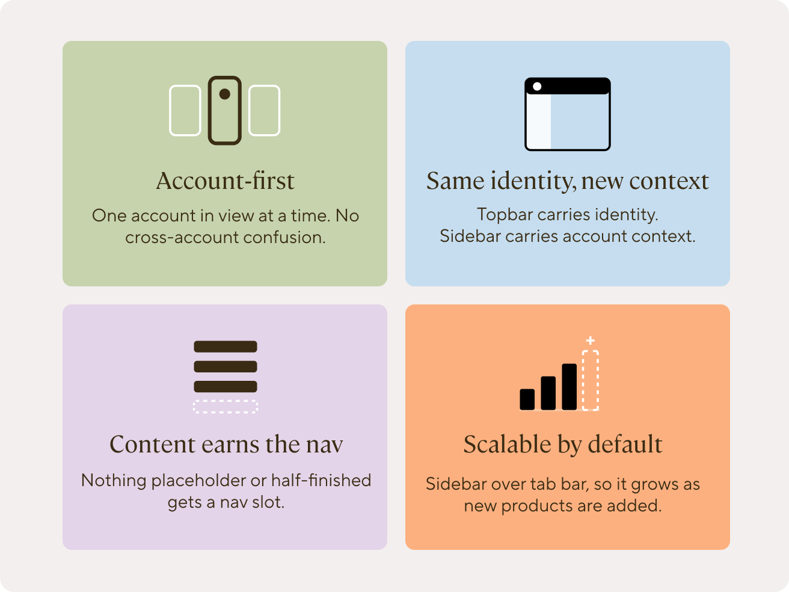
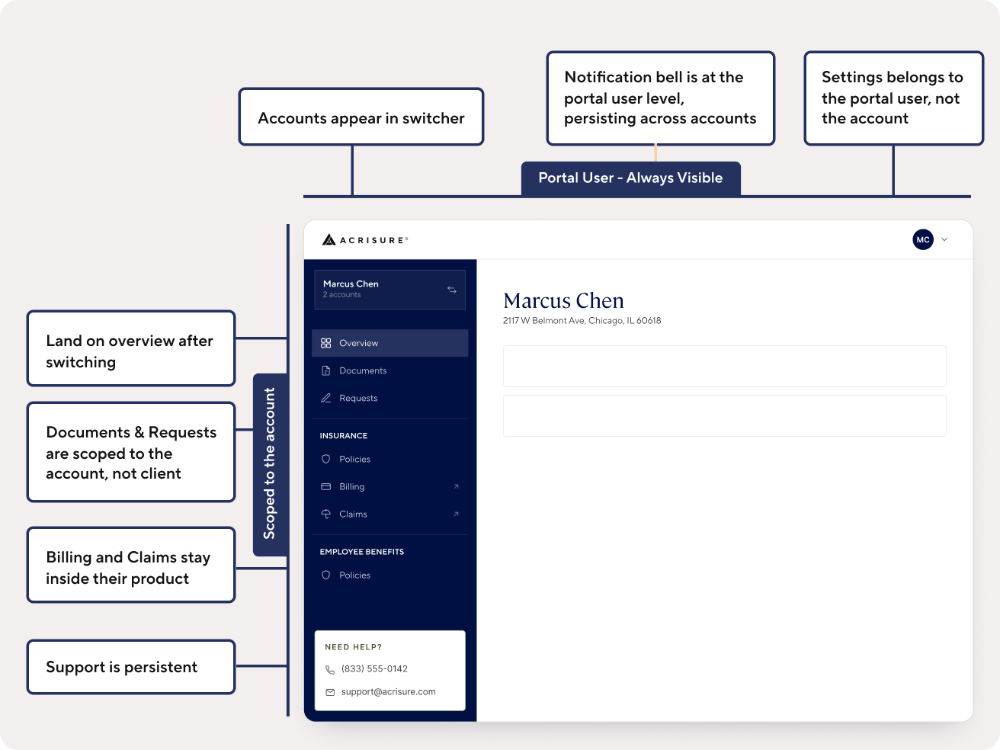

Designing a Portal Around the Limits of the Data
Unifying every account a client holds, designed around data the system can't reliably surface.

The Situation
Acrisure had grown by rolling up more than 1,000 businesses, each bringing its own systems, data, and definition of what "client" even meant. The only client-facing option was a third-party tool with mixed adoption. No client, servicer, or business team had ever had one place to see everything a given client held.
Leadership's goal was three-fold: help clients manage everything in one place instead of juggling logins and calls, help servicers spend less time on calls and emails, and help the business by cutting the tickets self-service could absorb and supporting cross-selling and risk management across a client's accounts.
The Constraint
Acrisure's system of record inherited that same fragmentation: inconsistent, incomplete data. Billing and Claims are hit hardest, since Acrisure is the broker, not the carrier, and doesn't hold that data directly. Neither can be reliably shown in the new portal. Those tasks route out to that existing tool instead, a call made above the design work. I designed the handoff itself: what that journey out actually looks like for a client.
The business also needed something shipped fast, and the only design system available to build from was acrisure.com's own: built for marketing pages, not for the structural weight a servicing portal needed to carry.
Decision One: Policy Archetype Models
Acrisure's portal needs to show dozens of distinct policy types: Homeowners, Auto, BOP, Workers' Comp, and more, each with genuinely different underlying data: what's insured, the details that need to be captured, the tasks a client has to take on each one. Designing each one from scratch meant new design work every time a policy type got added.
So I built a system instead: coverage breaks down into five structural archetypes based on how it attaches to whatever it covers, one reusable pattern per archetype instead of one-off work per policy type, saving both design and engineering time as new products get added.





Decision Two: The Fast Navigation Tradeoff
Given the timeline, I launched on Acrisure's existing design system rather than build new navigation infrastructure. My manager and PM agreed with the call at the time, and given the deadline, it was the right one. It just meant the nav wasn't built for what came next.
What Broke After Launch
Three things surfaced the cost of that tradeoff, close together in time:
- Leadership wanted to vision-cast. Our design manager wanted to imagine where the portal could go next: payroll, mortgages, things we weren't even sure were feasible yet. It became clear fast that the borrowed navigation couldn't hold that kind of ambition, even hypothetically.
- A persona showed up that nobody had planned for. Wealth managers, who manage several clients' accounts instead of their own.
- Product needed things the structure had no place for. A real split between account-level and policy-level documents, and space for self-service tools and risk resources beyond a flat list of policies.
Decision Three: The Navigation Framework
I led the redesign, with a second designer pressure-testing my thinking the whole way. I used Claude throughout: competitive reviews of other portals, checking my structure against established UX research, and quickly iterating IA options before landing on the final one.
Before designing anything, I got the team aligned on shared language: what we meant by Portal User, Account, Product, and Access level. I also scoped one data issue, duplicate client records for the same business, out of the project entirely. That's a problem for engineering to solve, not something a navigation redesign could fix.

Design principles graphic: account-first, identity stays/context changes, content earns the nav, scalable by default
To test the structure, I used a scenario instead of reasoning about it in the abstract: Marcus Chen, a client juggling three businesses and a personal policy, all logging in on one Monday morning. The wealth manager persona fit the same model: one identity with several accounts underneath it, no new rule needed.

Fully annotated screen with placement callouts
That same structure resolved both open product requests (the document split and the new self-service and risk resources) without needing anything bolted on afterward.
I presented this work at a leadership offsite about where the portal was headed. Afterward, our Head of Product told me directly:
I was so impressed with the way you showed up in our offsite… I was so glad you were able to drive the kinds of conversations that needed to be had.
Head of Product, AcrisureWhere This Stands
Archetype models
Live in production. Still holding as new policy types get added.
Navigation framework
A completed proposal, not yet shipped.
Reflection
Both pieces are solving the same problem (a portal that wasn't built to scale) just at different points in time and different levels of the product. What ties them together is being upfront about a tradeoff made under real pressure, and choosing to go back and get it right once I had the room to.